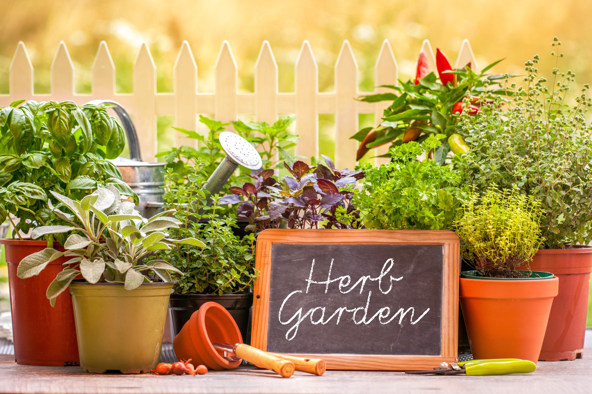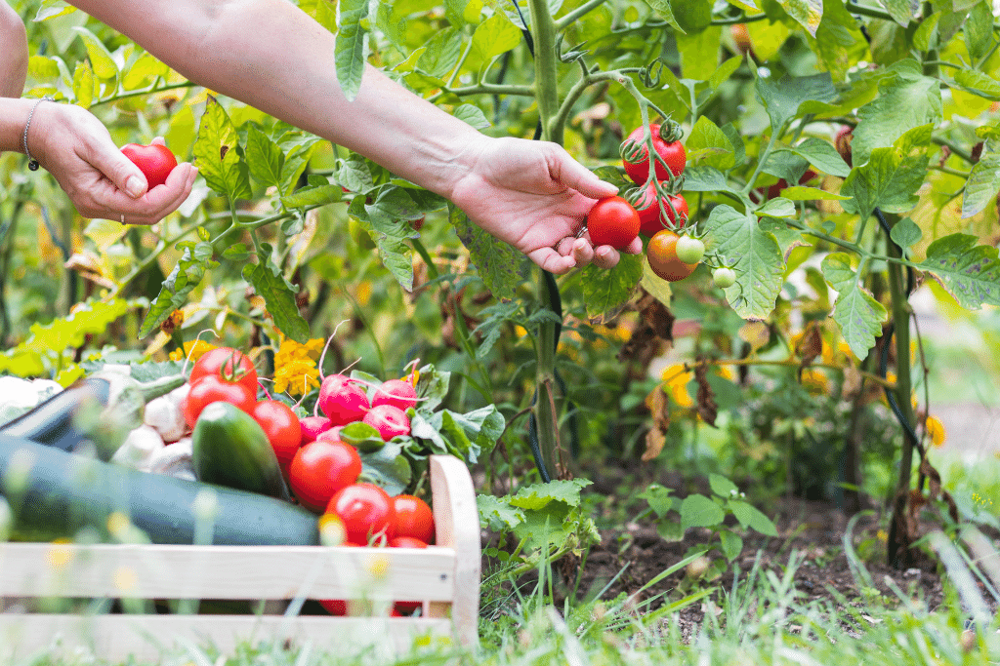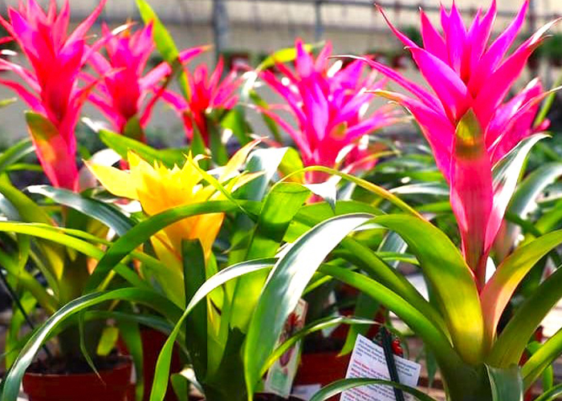
At The Whispering Garden, we grow and sell vibrant plants, fresh herbs, organic vegetables, and exotic flowers. We offer gardening tips and natural remedies using homegrown herbs to promote well-being. Whether you're a beginner or seasoned gardener, we're here to help you create a beautiful, sustainable garden.
About us
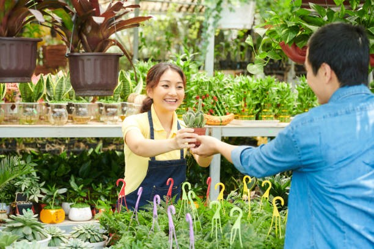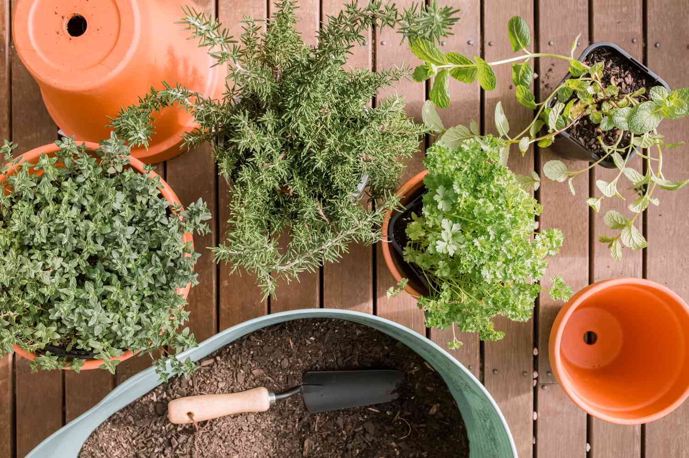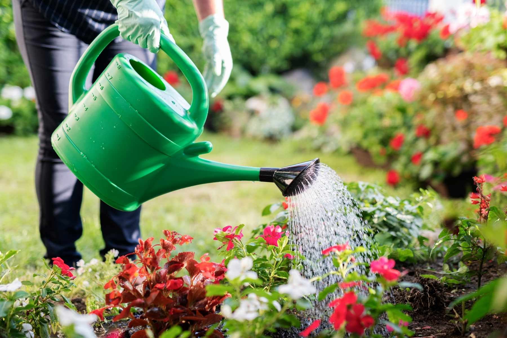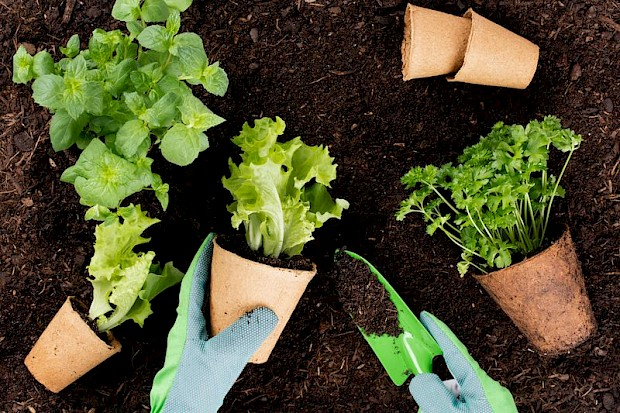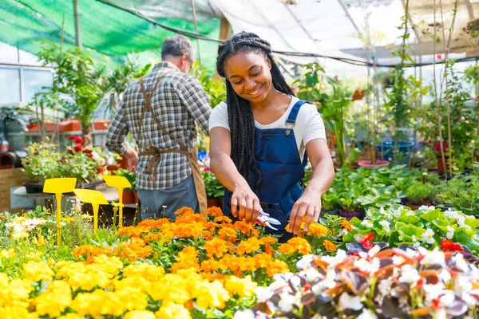 The Whispering Garden is a family-run nursery offering a variety of plants, herbs, fruits, and vegetables. We’re passionate about sustainable gardening and sharing tips on natural remedies. Whether you're new or experienced, we’re here to inspire your green journey
Contact us
Reach us for inquiries, plant advice, or orders. We're here to help your garden grow!

/Projects/4) Gardening Pages, Responsive Navigation project 4/test run/practice-files-test run/images3/x.png)
 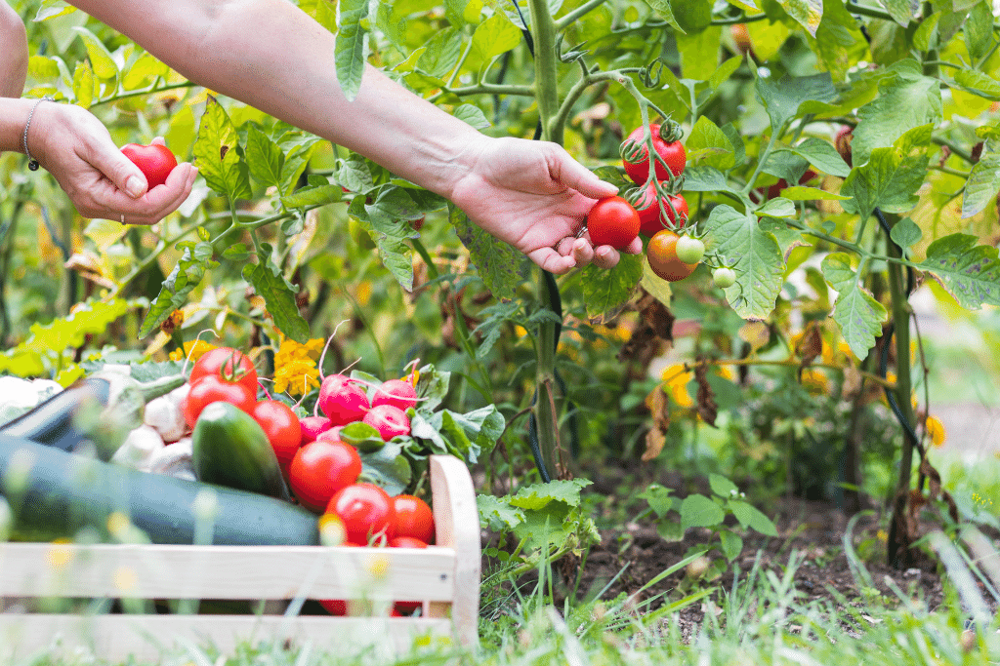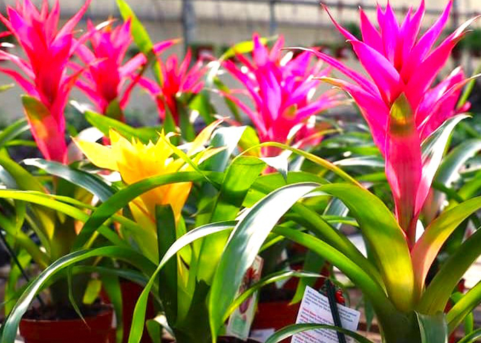
At The Whispering Garden, we grow and sell vibrant plants, fresh herbs, organic vegetables, and exotic flowers. We offer gardening tips and natural remedies using homegrown herbs to promote well-being. Whether you're a beginner or seasoned gardener, we're here to help you create a beautiful, sustainable garden.
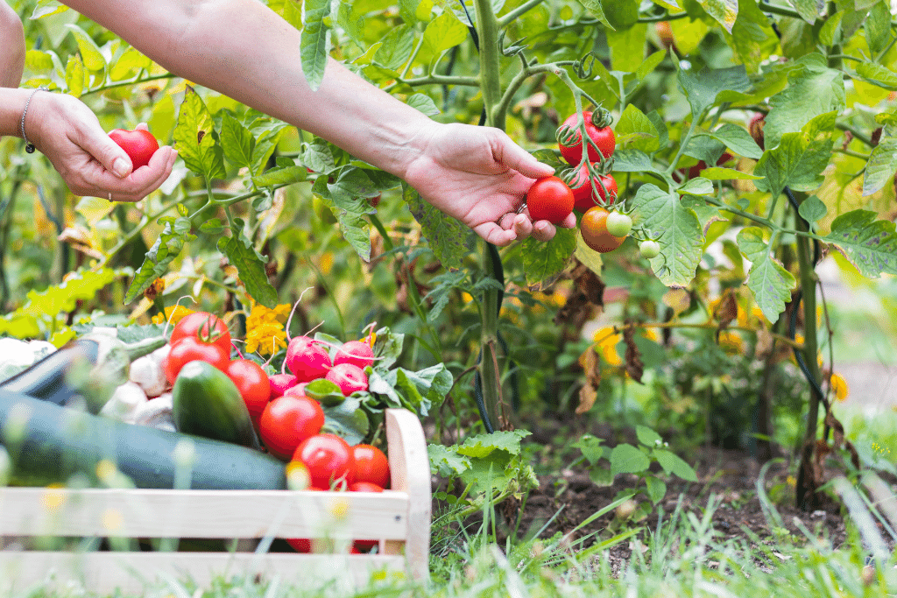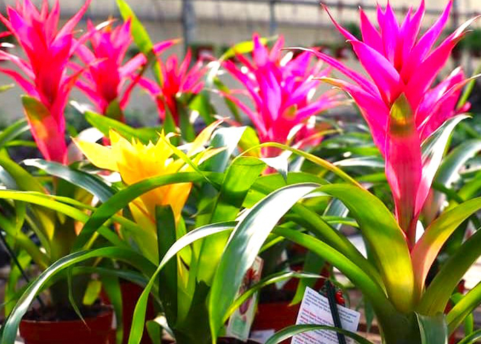
At The Whispering Garden, we grow and sell vibrant plants, fresh herbs, organic vegetables, and exotic flowers. We offer gardening tips and natural remedies using homegrown herbs to promote well-being. Whether you're a beginner or seasoned gardener, we're here to help you create a beautiful, sustainable garden. 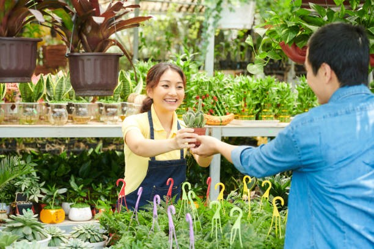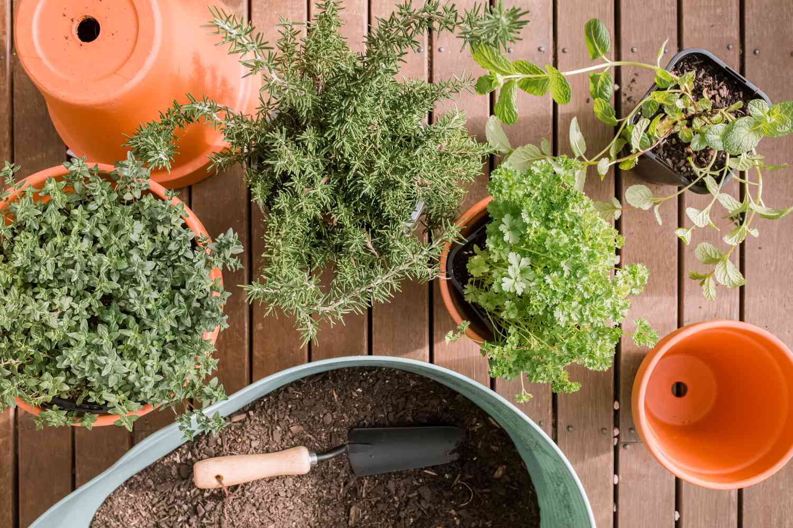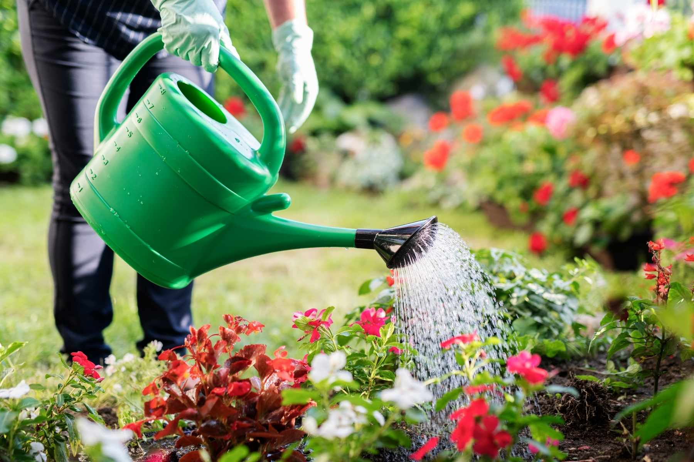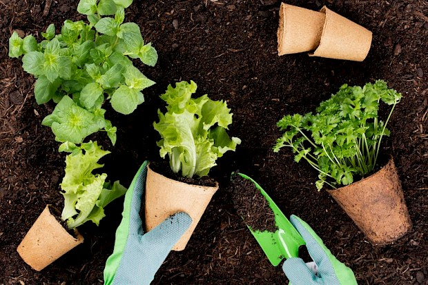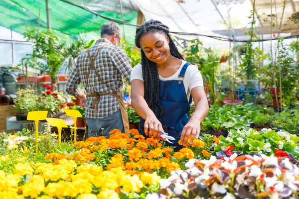 The Whispering Garden is a family-run nursery offering a variety of plants, herbs, fruits, and vegetables. We’re passionate about sustainable gardening and sharing tips on natural remedies. Whether you're new or experienced, we’re here to inspire your green journey
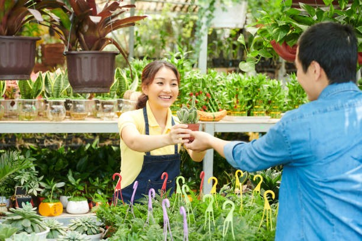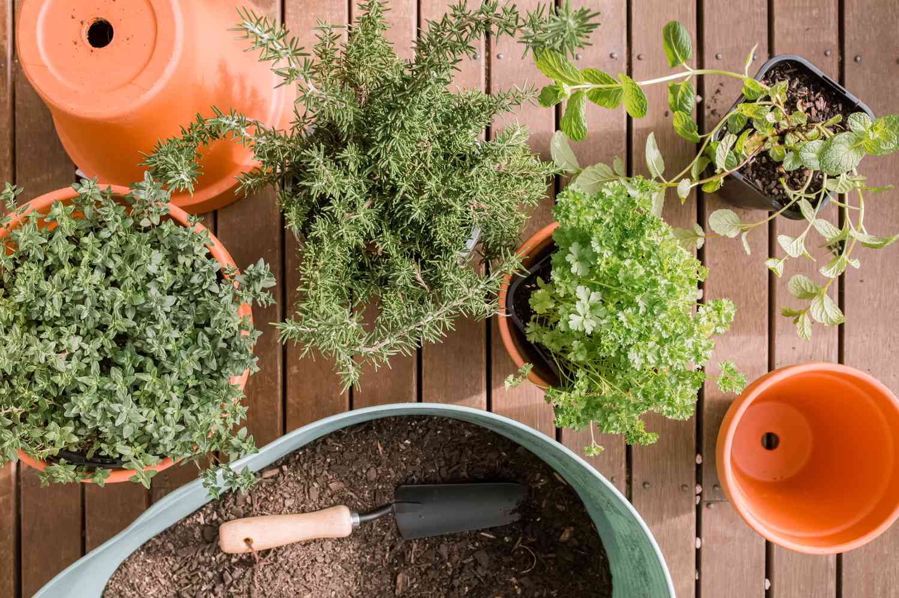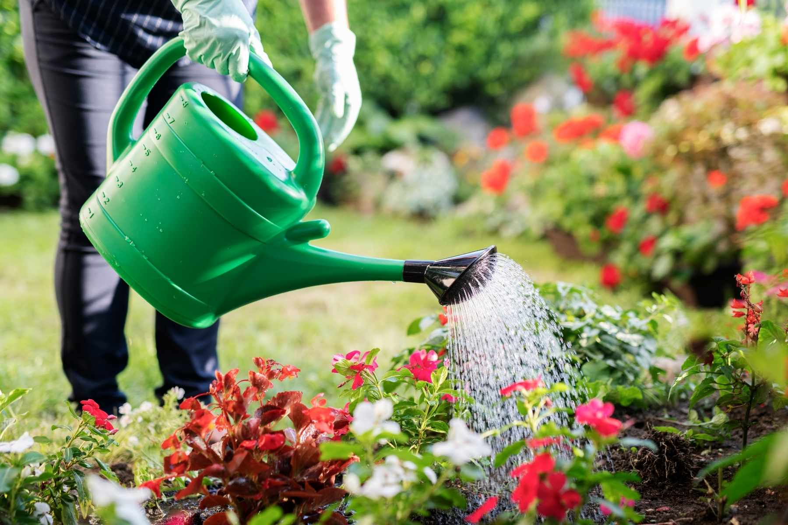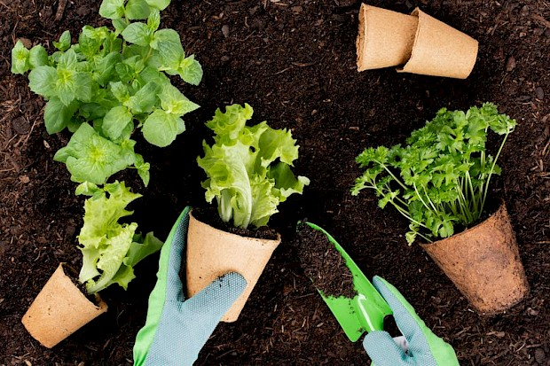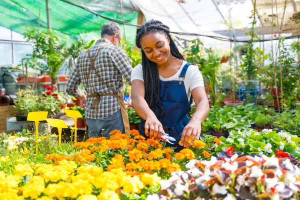 The Whispering Garden is a family-run nursery offering a variety of plants, herbs, fruits, and vegetables. We’re passionate about sustainable gardening and sharing tips on natural remedies. Whether you're new or experienced, we’re here to inspire your green journey